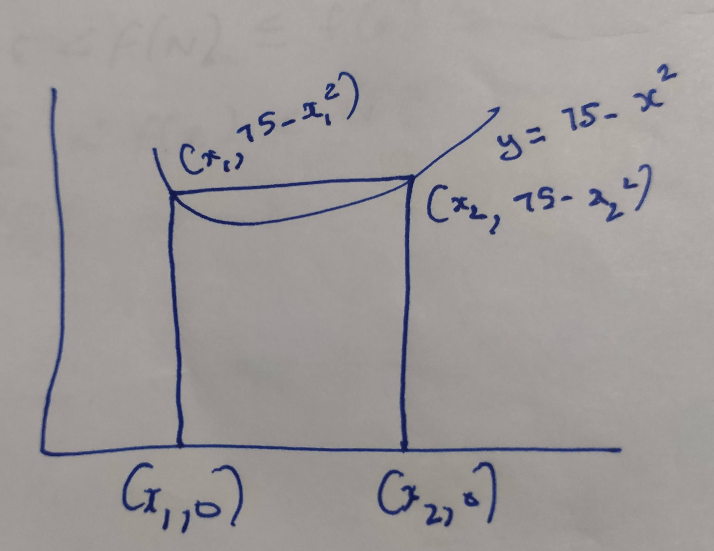
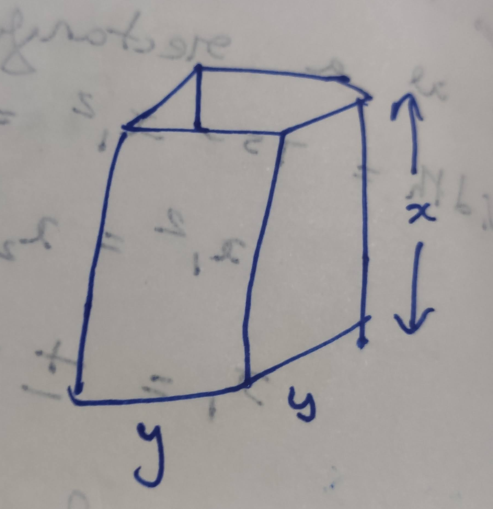
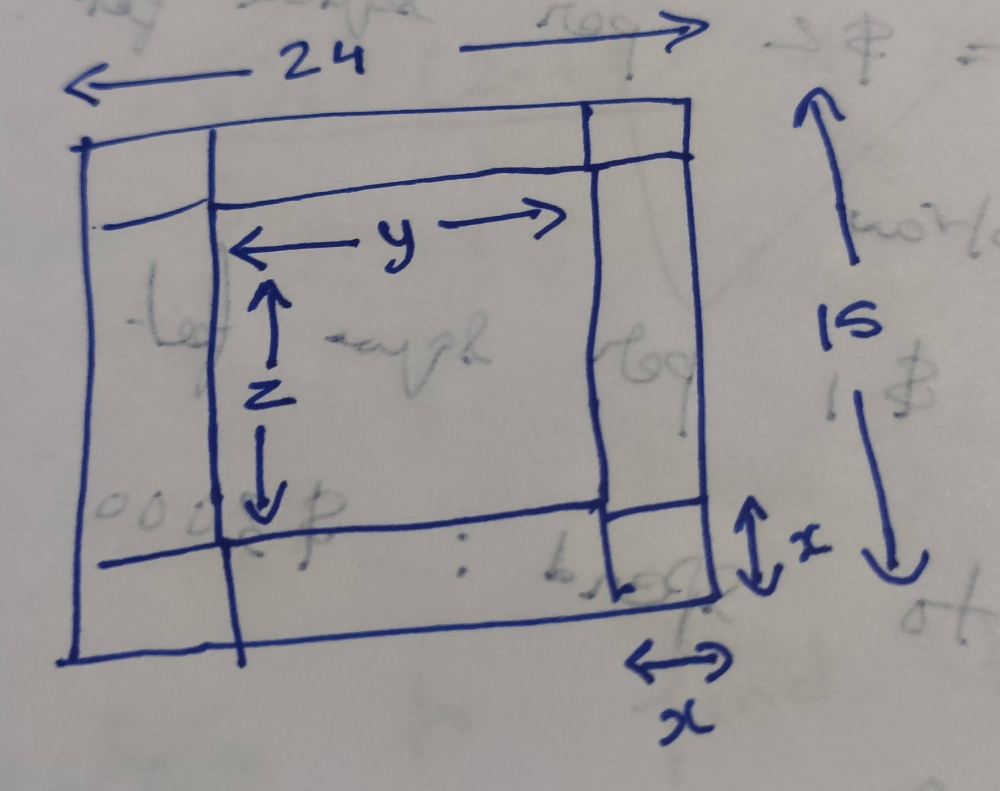
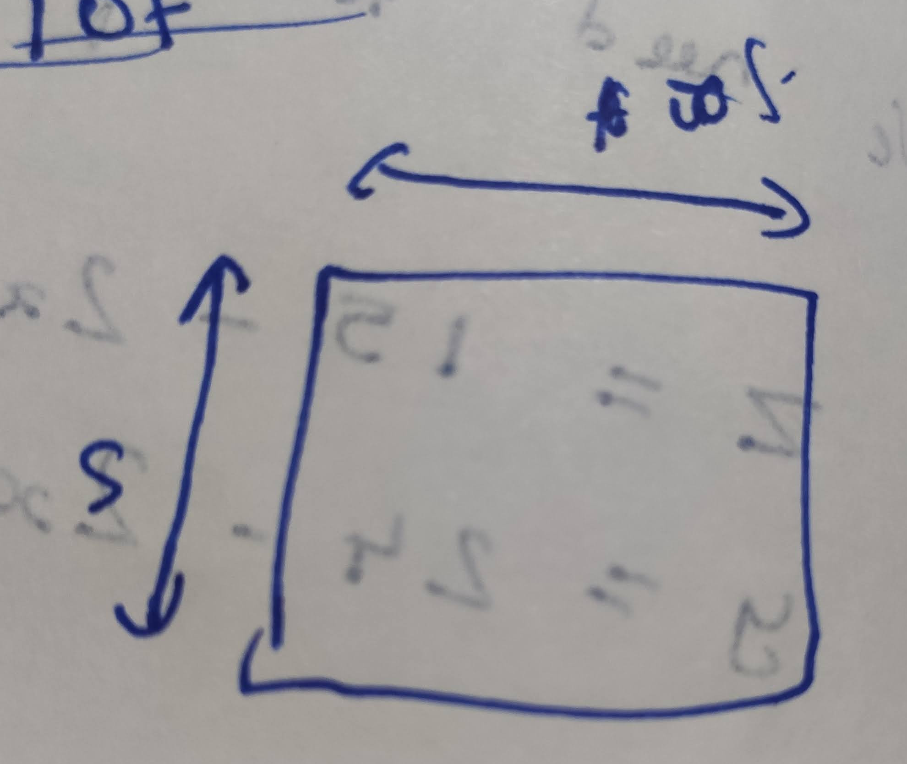
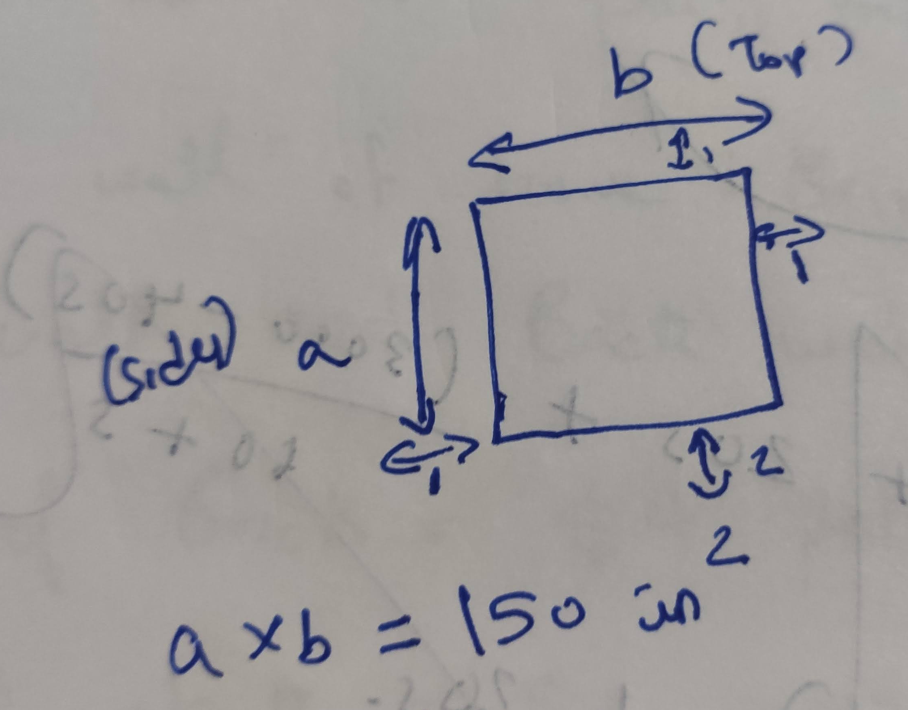
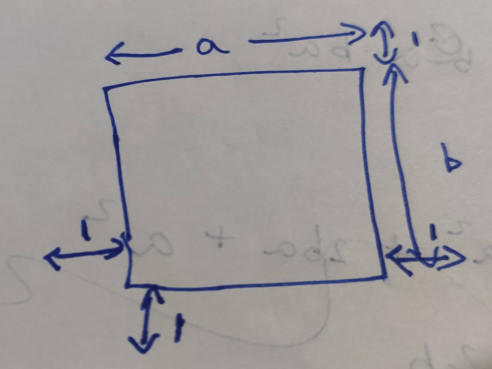
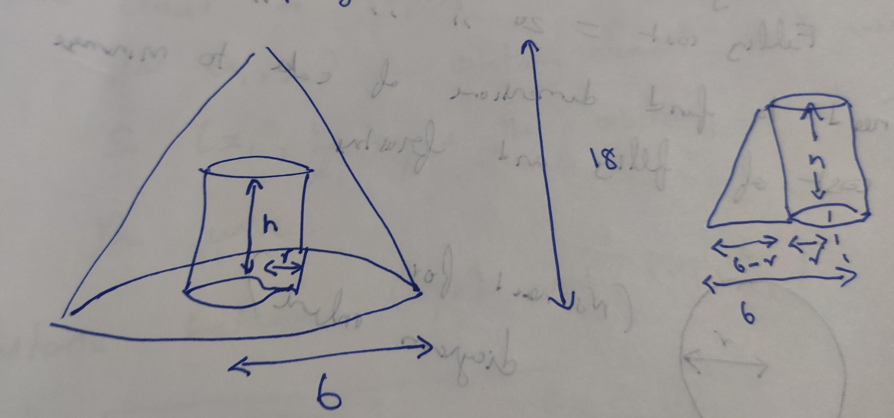
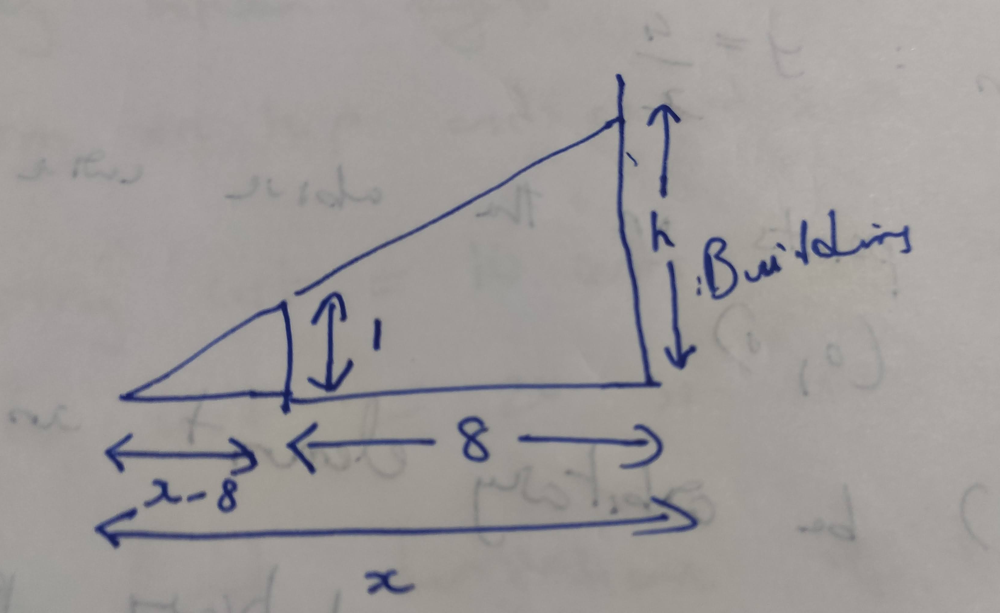
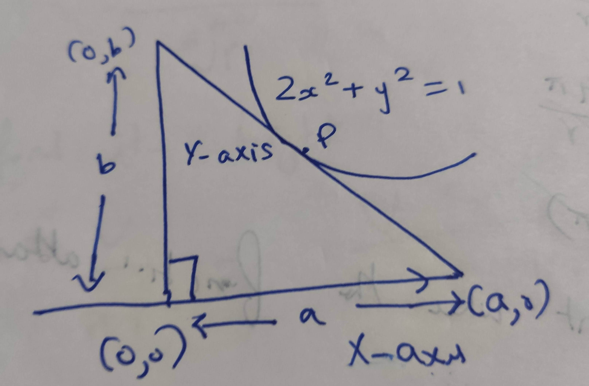

1 Optimization Problems
1.1 Solution 1

Bottom vertices: \((x_1,0), (x_2,0)\)
Top vertices: \((x_1, 75-x_1^2), (x_2, 75-x_2^2)\)
Since it is a rectangle, the width should be equal:
Width = \(75-x_1^2 = 75-x_2^2\)
\(x_1^2 = x_2^2\)
\(x_1 = \pm x_2\)
Area of rectangle = \((x_2 - x_1).(75-x_1^2)\)
So, \(x_1 \neq x_2\) as are will be zero in that case.
\(x_1 = -x_2\)
Area = \(2x_2(75-x_2^2)\)
Replacing \(x_2\) with \(x\),
\(f(x) = 2x(75-x^2)\)
Domain: \((0, \infty)\)
Let's write GNU Octave code to solve this further:
pkg load symbolic syms x f = 2*x*(75 - (x^2)) df = simplify(diff(f,x)) solve(df == 0,x)
octave> f = (sym)
⎛ 2⎞
2⋅x⋅⎝75 - x ⎠
df = (sym)
2
150 - 6⋅x
octave> ans = (sym 2×1 matrix)
⎡-5⎤
⎢ ⎥
⎣5 ⎦
So the critical number is \(-5\) and \(5\). Since the domain is \((0, \infty)\), we should use the critical number \(5\).
dfh = function_handle(df) [dfh(4), dfh(6)]
dfh = @(x) 150 - 6 * x .^ 2 ans = 54 -66
So the function has local maximum at \(5\). Let's compute the largest possible area for the rectangle:
fh = function_handle(f) [fh(5)]
fh = @(x) 2 * x .* (75 - x .^ 2) ans = 500
1.2 Solution 2
References:

Rectangular box volume = 500 cubic inches.
It has square base.
It has open top.
Volume \(= y.y.x = xy^2\)
\(xy^2 = 500\)
Surface area \(= 4xy + y^2\)
\(x = \dfrac{500}{y^2}\)
SA \(= 4.\dfrac{500}{y^2}.y + y^2\)
\(= \dfrac{2000}{y} + y^2\)
\(f(y) = \dfrac{2000}{y} + y^2\)
Domain: \((0, \infty)\)
Let's write GNU Octave code to solve this further:
clear pkg load symbolic syms y f = (2000/y) + y^2 df = simplify(diff(f,y)) solve(df == 0, y)
octave> octave> f = (sym)
2 2000
y + ────
y
df = (sym)
2000
2⋅y - ────
2
y
octave> ans = (sym 3×1 matrix)
⎡ 10 ⎤
⎢ ⎥
⎢-5 - 5⋅√3⋅ⅈ⎥
⎢ ⎥
⎣-5 + 5⋅√3⋅ⅈ⎦
So \(10\) is critical number for the function. Now let's find if we have a local minima or a maxima:
dfh = function_handle(df) [dfh(9), dfh(11)]
dfh = @(y) 2 * y - 2000 ./ y .^ 2 ans = -6.6914 5.4711
So at \(10\) we have a local minima. So the square base has the dimension of \(10\) inches. The box's height will be:
height = 500/(y^2) height_handle = function_handle(height) [height_handle(10)]
height = (sym)
500
───
2
y
height_handle =
@(y) 500 ./ y .^ 2
ans = 5
So the height should be \(5\) inches. We can indeed verify if the volume is coming to \(500\) cubic inches:
10*10*5
ans = 500
So the dimensions to minimize the amount of material needed is \(10\) inches as the square base on each of it's side. And \(5\) inches as the height of the rectangular box.
1.3 Solution 3
Details:
- Rectangular box
- Square base
- Open box
Material = 75 square inches
We need to find largest volume.
sibi: start from here
clear syms y f = y^2*((75/(4*y)) - (y/4)) df = simplify(diff(f,y)) solve(df==0, y)
octave> f = (sym)
2 ⎛ y 75⎞
y ⋅⎜- ─ + ───⎟
⎝ 4 4⋅y⎠
octave> df = (sym)
2
75 3⋅y
── - ────
4 4
ans = (sym 2×1 matrix)
⎡-5⎤
⎢ ⎥
⎣5 ⎦
\(y\) cannot be \(-5\) as the dimension cannot be in negative. Let's check if the critical number \(5\) is a local minima or a maxima.
dfh = function_handle(df) [dfh(4), dfh(6)]
dfh = @(y) 75 / 4 - 3 * y .^ 2 / 4 ans = 6.7500 -8.2500
So we confirm that the function attains it's local maximum at \(5\). So now let's find the largets possible volume:
fh = function_handle(f) [fh(5)]
fh = @(y) y .^ 2 .* (-y / 4 + 75 ./ (4 * y)) ans = 62.500
So the largest possibe volume is \(62.5\) cubic inches.
1.4 Solution 4
Rectangular cardboard: 24 inch * 15 inch

We need to find the largets possible volume of it.
\(z = 15-2x\)
\(y - 24-2x\)
Volume = \(x.y.z = x(24-2x)(15-2x)\)
\(V = x(24-2x)(15-2x)\)
\(f(x) = x(24-2x)(15-2x)\)
\(Domain: (0,15)\)
Let's write GNU Octave code to solve this further:
Let's find the critical numbers first.
clear pkg load symbolic syms x f = x*(24 - 2*x)*(15 - 2*x) df = simplify(diff(f,x)) solve(df==0, x)
octave> octave> octave> f = (sym) x⋅(15 - 2⋅x)⋅(24 - 2⋅x)
df = (sym)
2
12⋅x - 156⋅x + 360
octave> ans = (sym 2×1 matrix)
⎡3 ⎤
⎢ ⎥
⎣10⎦
So we have two critical numbers: \(3, 10\).
Now let's try to find which one is the local maxima:
dfh = function_handle(df) [dfh(2), dfh(4), dfh(9), dfh(11)]
dfh = @(x) 12 * x .^ 2 - 156 * x + 360 ans = 96 -72 -72 96
So the local maxima is at \(3\). Let's find the maximum possibe volume of the box:
fh = function_handle(f) [fh(3)]
fh = @(x) x .* (15 - 2 * x) .* (24 - 2 * x) ans = 486
So the largest possible volume of the box is \(486\) cubic inches.
1.5 Solution 5
Rectangles houses being built.
Height of wall of house: 10 feet
House will have flat roof.
Front wall of house: Bricks
Side wall and Back wall: Sticks
Costs of Brick = $4 per square feet
Costs of Stick = $2 per square feet
Roof wall = Straw
Cost of straw = $1 per square feet
Total money to spend: $3000
We need to maximize floor space.
Width of front wall = f
Width of back wall = f
Width of side walls = S

Tota surface area = 10f + 10f + 10s + 10s + fs
\(3000 = 10.f.4 + 10.f.2 + 10.s.2 + 10.s.2 + f.s.1\)
\(3000 = 40f + 20f + 20s + 20s + fs\)
\(3000 = 60f + 40s + fs\)
\(3000 = 60f + fs + 40s\)
\(f(60 + s) = 3000 - 40s\)
\(f = \dfrac{3000 - 40s}{60+s}\)
Let's write GNU Octave code to find the local maxima of the function:
Domain: \((0, \infty)\)
clear pkg load symbolic syms s f = (s*(3000-(40*s)))/(60+s) df = simplify(diff(f,s)) solve(df == 0, s)
octave> octave> octave> f = (sym)
s⋅(3000 - 40⋅s)
───────────────
s + 60
octave> df = (sym)
2
- 40⋅s - 4800⋅s + 180000
─────────────────────────
2
s + 120⋅s + 3600
octave> ans = (sym 2×1 matrix)
⎡-150⎤
⎢ ⎥
⎣ 30 ⎦
We are interested in the number \(30\) as that's in the domain. Let's check if it's local maximum:
dfh = function_handle(df) [dfh(29), dfh(31)]
dfh = @(s) (-40 * s .^ 2 - 4800 * s + 180000) ./ (s .^ 2 + 120 * s + 3600) octave> ans = 0.90393 -0.87429
So, we can confirm that is the local maxima. So width of side wall is \(30\) Let's find the width of the front wall:
front = (3000 - 40*s)/(60 + s) front_handle = function_handle(front) [front_handle(30)]
front = (sym)
3000 - 40⋅s
───────────
s + 60
front_handle =
@(s) (3000 - 40 * s) ./ (s + 60)
ans = 20
So these are the dimensions for the house to maximize floor space:
Side wall width: \(30\) Front wall width: \(20\)
1.6 Solution 6
Rectangular area = 150 inches square
Margin at sides and top = 1 inch
Margin at bottom = 2 inches

\(a * b = 150 in^2\)
Cardboard length \(= b + 2\)
Cardboard width \(= a + 2\)
Total cardboard needed \(= (a+3)(b+2)\)
\(ab = 150\)
\(a = \dfrac{150}{b}\)
Surface Area (SA) \(= (a+3)(b+2)\)
\(= (\dfrac{150}{b} + 3)(b+2)\)
\(f(b) = (\dfrac{150}{b} + 3)(b+2)\)
Domain: \((0, 150)\)
Let's write GNU Octave code to solve this further:
clear pkg load symbolic syms b f = (150/b + 3)*(b+2) fb = simplify(diff(f,b)) solve(fb == 0, b)
octave> octave> octave> f = (sym)
⎛ 150⎞
⎜3 + ───⎟⋅(b + 2)
⎝ b ⎠
octave> fb = (sym)
300
3 - ───
2
b
octave> ans = (sym 2×1 matrix)
⎡-10⎤
⎢ ⎥
⎣10 ⎦
We will take \(10\) as the critical number since it's part of the domain.
fbh = function_handle(fb) [fbh(9), fbh(11)]
fbh = @(b) 3 - 300 ./ b .^ 2 octave> ans = -0.70370 0.52066
So the local minima is attained at critical number \(10\). Let's find the other dimension:
a = 150/b ah = function_handle(a) [ah(10)]
a = (sym) 150 ─── b ah = @(b) 150 ./ b octave> ans = 15
So the dimensions of the poster is \(10\) and \(15\) inches.
1.7 Solution 7
Wood cost = $3 per square feet
Metal cost = $2 per foot
Rectangle wood
Metral trim goes on top of sign
Printed area = 48 square feet
Printed area surrounded by 1 foot margin at top, bottom and sides.

\(a*b = 48\)
Total surface area = \((a+2)(b+2)\)
Cost depends on = Total surface area + Metal strip
\(= (a+2)(b+2) + a\)
\(ab = 48\)
\(a = \dfrac{48}{b}\)
Cost = \((a+2)(b+2).3 + (a+2).2\)
\(= (a+2)(2+(b+2).3)\)
\(= (\dfrac{48}{b} + 2)(2 + (b+2).3)\)
Domain: \((0, \infty)\)
Let's write GNU Octave code to solve this further:
clear pkg load symbolic syms b f = (48/b + 2)*(2 + (b+2)*3) fb = simplify(diff(f,b)) solve(fb == 0, b)
octave> octave> octave> f = (sym)
⎛ 48⎞
⎜2 + ──⎟⋅(3⋅b + 8)
⎝ b ⎠
fb = (sym)
384
6 - ───
2
b
octave> ans = (sym 2×1 matrix)
⎡-8⎤
⎢ ⎥
⎣8 ⎦
We will take \(8\) as the critical number since it's part of the domain.
fbh = function_handle(fb) [fbh(7), fbh(9)]
fbh = @(b) 6 - 384 ./ b .^ 2 octave> ans = -1.8367 1.2593
So the function attains it local minimum at \(8\). The other dimension is
48/8
ans = 6
Actual dimensions are \(a+2\) and \(b+2\). So the dimensions are \(8\) and \(10\) feets.
1.8 Solution 8
Cost of Material for partition = $1 per square feet
Cost of Other material = $2 per square feet
We need to find greatest volume that can be constructed for \(60\) dollars.
Length of square = a
Width of rectangle = b
Volume \(= b*a*a = ba^2\)
SA \(= a^2 + a^2 + a^2 + ab + ab + ab + ab\)
\(= 3a^2 + 4ab\)
Cost \(= 2a^2.2 + a^2.1 + 4ab.2\)
\(= 4a^2 + a^2 + 8ab\)
C \(= 5a^2 + 8ab\)
\(60 = 5a^2 + 8ab\)
\(8ab = 60 - 5a^2\)
\(b = \dfrac{60-5a^2}{8a}\)
Volume = \(ba^2 = \dfrac{(60-5a^2)a^2}{8a}\)
\(= \dfrac{(a).60-5a^2}{8a}\)
Domain: \((0, \infty)\)
Let's write GNU Octave code to solve this further:
clear pkg load symbolic syms a f = (60-(5*a^2))*a/8 df = simplify(diff(f,a)) solve(df == 0, a)
octave> octave> octave> f = (sym)
⎛ 2⎞
a⋅⎝60 - 5⋅a ⎠
─────────────
8
df = (sym)
2
15 15⋅a
── - ─────
2 8
ans = (sym 2×1 matrix)
⎡-2⎤
⎢ ⎥
⎣2 ⎦
We will take \(2\) as the critical number since it's part of the domain.
dfh = function_handle(df) [dfh(1), dfh(3)]
dfh = @(a) 3 / 4 - 3 * a .^ 2 / 16 octave> ans = 0.56250 -0.93750
So the function has local maxima at \(2\). So the other dimension is:
b = (60 - (5*a^2))/(8*a) bh = function_handle(b) [bh(2)]
b = (sym)
2
60 - 5⋅a
─────────
8⋅a
bh =
@(a) (60 - 5 * a .^ 2) ./ (8 * a)
ans = 2.5000
So \(a=1\) and \(b=2.5\)
1.9 Solution 9
Temp of coffee decreases \(4^\circ F\) for each square inch that is exposed to air.
Temp of coffee decreases \(2^\circ F\) for each square inch touching bottom and sides of mugh.
Must must hold \(3\pi\) cubic inches of coffee.
We need to find dimension to keep coffee as hot as possible.
$r = $ Radius of cylinder
\(h =\) Height of cylinder
Volume \(= \pi r^2 h = 3\pi\)
Area of top of the mug \(= \pi r^2\)
Area of bottom and side of mug = \(\pi r^2 + 2\pi r h\)
Temperature drops after \(5 min\) \(= \pi r^2 . 4 + (\pi r^2 + 2\pi r h).2\)
We need to find minimum value for the above equation so that the temp drop is low.
\(\pi r^2 h = 3\pi\)
\(r^2 h = 3\)
\(h = \dfrac{3}{r^2}\)
Temperature drop = \(\pi r^2 4 + (\pi r^2 + 2\pi r \dfrac{3}{4^2})2\)
\(= \pi r^2 4 + (\pi r^2 + 6 \dfrac{\pi}{r})2\)
\(f(r) = \pi r^2 4 + (\pi r^2 + 6 \dfrac{\pi}{r})2\)
Domain: \((0, \infty)\)
Let's write GNU Octave code to solve this further:
clear pkg load symbolic syms r p f = p*(r^2)*4 + (((p * r^2) + ((6*p/r)))*2) df = simplify(diff(f,r)) solve(df==0, r)
octave> octave> octave> f = (sym)
2 12⋅p
6⋅p⋅r + ────
r
df = (sym)
⎛ 3 ⎞
12⋅p⋅⎝r - 1⎠
─────────────
2
r
octave> ans = (sym 3×1 matrix)
⎡ 1 ⎤
⎢ ⎥
⎢ 1 √3⋅ⅈ⎥
⎢- ─ - ────⎥
⎢ 2 2 ⎥
⎢ ⎥
⎢ 1 √3⋅ⅈ⎥
⎢- ─ + ────⎥
⎣ 2 2 ⎦
There only one number which is part of the domain. Let's find if it's a local minima for the function:
dfh = function_handle(df) [dfh(pi, 0.5), dfh(pi, 2)]
dfh = @(p, r) 12 * p .* (r .^ 3 - 1) ./ r .^ 2 ans = -131.947 65.973
So we can confirm that it's a local minima. So the radius is \(1\) inch and the height of the cylinder is:
h = 3/(r^2) hh = function_handle(h) [hh(1)]
h = (sym)
3
──
2
r
octave> hh =
@(r) 3 ./ r .^ 2
ans = 3
So the dimensions of the mug which will keep the coffee as hot as possible are height of \(3\) inches along with radius of \(1\) inch.
1.10 Solution 10
Cone's height = 18inches
Cone's base radius = 6 inches
We need to find the greates volume of cylinder that can be inscribed in thea bove cone.
Volume of cylinder \(= \pi r^2 h\)
$h = $ Height of cylinder

Using similar triangle property,
\(\dfrac{h}{6-r} = \dfrac{18}{6} = 3\)
\(h = 18 - 3r\)
Volume \(= \pi r^2 h = \pi r^2 (18 - 3r)\)
\(f(r) = 3\pi r^2 (18 - 3r)\)
Domain: \((0, 18)\)
Let's write GNU Octave code to solve this further:
clear pkg load symbolic syms r f = 3*pi*r^2*(18-3*r) df = simplify(diff(f,r)) solve(df == 0, r)
octave> octave> warning: passing floating-point values to sym is dangerous, see "help sym"
warning: called from
double_to_sym_heuristic at line 50 column 7
sym at line 379 column 13
mtimes at line 63 column 5
f = (sym)
2
3⋅π⋅r ⋅(18 - 3⋅r)
octave> df = (sym) 27⋅π⋅r⋅(4 - r)
ans = (sym 2×1 matrix)
⎡0⎤
⎢ ⎥
⎣4⎦
Taking the value of 4 since it's in domain, let's see if it's the local maxima for the function.
dfh = function_handle(df) [dfh(3), dfh(5)]
dfh = @(r) 27 * pi * r .* (4 - r) ans = 254.47 -424.12
So at \(r=4\), the function attains it's maximum value. Let's find the cylinder's height now:
h = (18 - 3*r) hh = function_handle(h) hh(4)
h = (sym) 18 - 3⋅r hh = @(r) 18 - 3 * r octave> ans = 6
So the dimensions of cylinder of greatest volume that can be inscribed is cylinder of radius 4 and height of 6 inches.
Reference video
1.11 Solution 11
Baking two layer round cake.
Volume of two layers of cake \(= 81\pi inches^3\)
Filling between layers
Fronstin on top and around sides.
Frosting cost = 10 cents per square inch
Filling cost = 20 cents per square inch
We need to find dimensions of cake to minimize the cost of filling and frosting.
SA of top of cake \(= \pi r^2\)
SA of side of cake \(= 2\pi r * h\)
where \(h\) is height of cake.
Total volume of cake \(= \pi r^2 h\)
\(81 \pi = \pi r^2 h\)
\(r^2 h = 81\)
\(h = \dfrac{81}{r^2}\)
Cost of cake = Frosting cost + Filling cost
\(= (\pi r^2 * 10) + (2 \pi r h * 10) + \pi r^2 . 20\)
$ = 10 π r2 + 20 π r h + 20 π r2$
\(= 30 \pi r^2 + 20 \pi r \dfrac{81}{r^2}\)
\(f(r) = 30 \pi r^2 + \dfrac{1620 \pi}{r}\)
Domain: \((0, \infty)\)
Let's write GNU Octave code to solve this further:
clear pkg load symbolic syms r p f = 30*p*r^2 + (1620*p/r) df = simplify(diff(f,r)) solve(df == 0, r)
I'm using the symbol \(p\) instead of \(\pi\) to make calculuations simpler.
octave> octave> f = (sym)
2 1620⋅p
30⋅p⋅r + ──────
r
octave> df = (sym)
⎛ 3 ⎞
60⋅p⋅⎝r - 27⎠
──────────────
2
r
ans = (sym 3×1 matrix)
⎡ 3 ⎤
⎢ ⎥
⎢ 3 3⋅√3⋅ⅈ⎥
⎢- ─ - ──────⎥
⎢ 2 2 ⎥
⎢ ⎥
⎢ 3 3⋅√3⋅ⅈ⎥
⎢- ─ + ──────⎥
⎣ 2 2 ⎦
We know that the critical number is \(3\). Now let's confirm that the function attains the local minima at the number:
dfh = function_handle(df) [dfh(pi, 2), dfh(pi, 4)]
dfh = @(p, r) 60 * p .* (r .^ 3 - 27) ./ r .^ 2 ans = -895.35 435.90
So we can confirm that \(3\) is infact the local minima for the function. Now let's compute the height of the cake:
h = 81/r^2 hh = function_handle(h) hh(3)
h = (sym)
81
──
2
r
hh =
@(r) 81 ./ r .^ 2
octave> ans = 9
So the dimensions of the cake to minimize the cost of filling and frosting should be cake of height \(9\) inches and radius should be \(3\) inches.
1.12 Solution 12
Curve equation: \(y = \dfrac{4}{x}\)
We need to find points on the above curve that are closes to \((0,0)\)
Let \((x_1, y_1)\) be an arbitrary point in the curve.
So, \((x_1, \dfrac{4}{x_1})\) is the arbitrary point in the curve.
Distance between \((0,0)\) and \((x_1, \dfrac{4}{x_1})\)
\(= \sqrt{(x_1 - 0)^2 + (\dfrac{4}{x_1} - 0)^2}\)
\(f(x)= \sqrt{(x - 0)^2 + (\dfrac{4}{x} - 0)^2}\)
\(f(x) = \sqrt{x^2 + \dfrac{16}{x^2}}\)
We need to find the local minimal for the function:
Domain: \((-\infty, \infty)\)
Let's write GNU Octave code to solve this further:
clear pkg load symbolic syms x f = sqrt(x^2 + (16/x^2)) df = simplify(diff(f,x)) solve(df==0, x)
octave> octave> octave> f = (sym)
_________
╱ 2 16
╱ x + ──
╱ 2
╲╱ x
df = (sym)
4
x - 16
──────────────────
_________
╱ 4
3 ╱ x + 16
x ⋅ ╱ ───────
╱ 2
╲╱ x
octave> ans = (sym 4×1 matrix)
⎡ -2 ⎤
⎢ ⎥
⎢ 2 ⎥
⎢ ⎥
⎢-2⋅ⅈ⎥
⎢ ⎥
⎣2⋅ⅈ ⎦
So we have two numbers within the domain which are critical numbers for the function. Let's find out which one is the local minima:
dfh = function_handle(df) [dfh(-3), dfh(-1), dfh(1), dfh(3)]
dfh = @(x) (x .^ 4 - 16) ./ (x .^ 3 .* sqrt ((x .^ 4 + 16) ./ x .^ 2)) ans = -0.73331 3.63803 -3.63803 0.73331
So both \(-2\) and \(2\) are local minima. Let's find the corresponding y co-ordinates:
y = 4/x yh = function_handle(y) [yh(-2), yh(2)]
y = (sym)
4
─
x
yh =
@(x) 4 ./ x
octave> ans =
-2 2
So the corrdinates are \((-2,2)\) and \((2,2)\) and they are the closest to the origin from the curve.
Reference formula used above.
1.13 Solution 13
We need to find shortest board to go from the ground over the wall of the building.

Using similar triangle property,
\(\dfrac{h}{x} = \dfrac{1}{x-8}\)
\(h = \dfrac{x}{x-8}\)
Board = \(\sqrt{x^2 + h^2} = \sqrt{x^2 + \dfrac{x^2}{(x-8)^2}}\)
\(f(x) = \sqrt{x^2 + \dfrac{x^2}{(x-8)^2}}\)
Domain: \((0, \infty)\)
We need to find the local minima for the function.
Let's write GNU Octave code to solve this further:
clear pkg load symbolic syms x f = sqrt(x^2 + (x^2/(x-8)^2)) df = simplify(diff(f,x)) solve(df==0, x)
octave> octave> octave> f = (sym)
_______________
╱ 2
╱ 2 x
╱ x + ────────
╱ 2
╲╱ (x - 8)
df = (sym)
⎛ 3 ⎞
x⋅⎝(x - 8) - 8⎠
──────────────────────────────────
___________________
╱ 2 ⎛ 2 ⎞
╱ x ⋅⎝(x - 8) + 1⎠ 3
╱ ───────────────── ⋅(x - 8)
╱ 2
╲╱ (x - 8)
octave> ans = (sym 3×1 matrix)
⎡ 10 ⎤
⎢ ⎥
⎢7 - √3⋅ⅈ⎥
⎢ ⎥
⎣7 + √3⋅ⅈ⎦
We select the number \(10\) since it's part of the domain. Let's confirm that it's the local minima for the function:
dfh = function_handle(df) [dfh(9), dfh(11)]
dfh = @(x) x .* ((x - 8) .^ 3 - 8) ./ (sqrt (x .^ 2 .* ((x - 8) .^ 2 + 1) ./ (x - 8) .^ 2) .* (x - 8) .^ 3) ans = -4.94975 0.66759
That confirms that \(10\) is local minima for the function. Now let's find the dimension of the board:
fh = function_handle(f) fh(10)
fh = @(x) sqrt (x .^ 2 + x .^ 2 ./ (x - 8) .^ 2) ans = 11.180 octave> ans = 11.180
1.14 Solution 14
Cylindrical metal can's volume = V
Surface area of cone = SA of top and bottom + SA of the side
\(= \pi r^2 + \pi r^2 + 2\pi r h\)
\(= 2\pi r^2 + 2\pi r h\)
$r = $ Radius of can
$h = $ Height of can
We need to find dimension to minimize the amount of metal needed to make the can. So the SA should be minimum.
\(V = \pi r^2 h\)
\(h = \dfrac{V}{\pi r^2}\)
\(SA = 2\pi r^2 + 2\pi r h\)
\(= 2 \pi r^2 + \dfrac{2 \pi r V}{\pi r^2}\)
\(= 2\pi r^2 + \dfrac{2 V}{r}\)
Domain: \((0, \infty)\)
We need to find the local minima for the above function.
clear pkg load symbolic syms r V f = 2*pi*r^2 + (2*V/r) df = simplify(diff(f,r)) solve(df==0,r)
octave> octave> octave> warning: passing floating-point values to sym is dangerous, see "help sym"
warning: called from
double_to_sym_heuristic at line 50 column 7
sym at line 379 column 13
mtimes at line 63 column 5
f = (sym)
2⋅V 2
─── + 2⋅π⋅r
r
df = (sym)
2⋅V
- ─── + 4⋅π⋅r
2
r
octave> ans = (sym 3×1 matrix)
⎡ 2/3 3 ___ ⎤
⎢ 2 ⋅╲╱ V ⎥
⎢ ────────── ⎥
⎢ 3 ___ ⎥
⎢ 2⋅╲╱ π ⎥
⎢ ⎥
⎢ 2/3 3 ___ ⎥
⎢2 ⋅╲╱ V ⋅(-1 + √3⋅ⅈ) ⎥
⎢────────────────────── ⎥
⎢ 3 ___ ⎥
⎢ 4⋅╲╱ π ⎥
⎢ ⎥
⎢ 2/3 3 ___ ⎥
⎢-2 ⋅╲╱ V ⋅(1 + √3⋅ⅈ) ⎥
⎢───────────────────────⎥
⎢ 3 ___ ⎥
⎣ 4⋅╲╱ π ⎦
Now the easiest way to confirm if the first value of the above matrix is local minima is to use the second derivative test.
ddf = simplify(diff(f,r,r))
ddf = (sym)
4⋅V
─── + 4⋅π
3
r
Since both \(V\) and \(r\) is positive, we know that the second derivative is positive. And hence we know that the first value of the matrix is a local minima.
So \(r = \dfrac{2^{-1/3}\sqrt[3]{V}}{\sqrt[3]{\pi}}\)
Let's find it's height:
\(h = \dfrac{V}{\pi r^2}\)
\(= \dfrac{ V * \pi^{2/3}}{\pi * (2^{-1/3})^2 V^{2/3}}\)
\(= \dfrac{\sqrt[3]{V}}{\sqrt[3]{\pi}} (2^{1/3})^2\)
\(= \dfrac{\sqrt[3]{4}\sqrt[3]{V}}{\sqrt[3]{\pi}}\)
\(\dfrac{h}{r} = \dfrac{\sqrt[4]{3} \sqrt[3]{V} \sqrt[3]{\pi}}{\sqrt[3]{\pi} * 2^{-1/3} * \sqrt[3]{V}}\)
\(= \dfrac{3\sqrt{4}}{2^{-1/3}} = \dfrac{2^{2/3}}{2^{-1/3}} = 2^{2/3}.2^{1/3} = 2\)
\(\dfrac{h}{r} = 2\)
\(h = 2r = d\)
Hence proved.
1.15 Solution 15
Volume of can \(= 32 \pi cubic inches\)
SA of can \(= 2\pi r^2 + 2\pi r h\)
\(\pi r^2 h = 32 \pi\)
\(r^2 h = 32\)
\(h = \dfrac{32}{r^2}\)
We need to find the point whre the function attains local minima.
\(SA = 2\pi r (h + 2r)\)
\(= 2\pi r(\dfrac{32}{r^2} + 2r)\)
Domain: \((0, 32 \pi)\)
In the above equation we have \((h+2r)\) because \(h\) is the height of the cylinder and the \(2r\) is the approximation of the additional wrapping paper required to cover top and bottom.
Let's write GNU Octave code to solve this further:
clear pkg load symbolic syms r f = 2*pi*r*(32/r^2 + 2*r) df = simplify(diff(f,r)) solve(df==0, r)
octave> octave> warning: passing floating-point values to sym is dangerous, see "help sym"
warning: called from
double_to_sym_heuristic at line 50 column 7
sym at line 379 column 13
mtimes at line 63 column 5
f = (sym)
⎛ 32⎞
2⋅π⋅r⋅⎜2⋅r + ──⎟
⎜ 2⎟
⎝ r ⎠
octave> df = (sym)
⎛ 3 ⎞
8⋅π⋅⎝r - 8⎠
────────────
2
r
ans = (sym 3×1 matrix)
⎡ 2 ⎤
⎢ ⎥
⎢-1 - √3⋅ⅈ⎥
⎢ ⎥
⎣-1 + √3⋅ⅈ⎦
Now let's check if the first value in the matrix is where the function attains it's local minima:
dfh = function_handle(df) [dfh(1), dfh(3)]
dfh = @(r) 8 * pi * (r .^ 3 - 8) ./ r .^ 2 ans = -175.929 53.058
That confirms that it attains local minima there. Let's compute the height of the cylinder:
h = 32/(r^2) hh = function_handle(h) [hh(2)]
h = (sym)
32
──
2
r
hh =
@(r) 32 ./ r .^ 2
octave> ans = 8
So the dimension of the cylinder is \(2\) inches radius and \(8\) inches height.
1.16 Solution 16
Right triangle wikipedia page to understand what legs mean in the question.
https://www.youtube.com/watch?v=2keGgDBJKGU

We need to find smallest possible area for the triangle.
\(Area = \dfrac{1}{2}ab\)
\(P = (x_1, y_1)\)
\(2(x_1)^2 + (y_1)^2 = 1\)
\(y_1 = \sqrt{1-(2x_1)^2}\)
\(P = (x_1, \sqrt{1 - 2(x_1)^2})\)
The full answer is in the Match stackexchange question
clear pkg load symbolic syms b f = b^2/(2*sqrt(2*(b^2 - 1))) df = simplify(diff(f,b)) solve(df == 0, b)
octave> octave> f = (sym)
2
b
───────────────
__________
╱ 2
2⋅╲╱ 2⋅b - 2
octave> df = (sym)
⎛ 2 ⎞
√2⋅b⋅⎝b - 2⎠
─────────────
3/2
⎛ 2 ⎞
4⋅⎝b - 1⎠
ans = (sym 3×1 matrix)
⎡ 0 ⎤
⎢ ⎥
⎢-√2⎥
⎢ ⎥
⎣√2 ⎦
We can ignore the first value since the dimension cannot be zero. We can ignore the second answer since the dimension should be positive.
dfh = function_handle(df) [dfh(1.3), dfh(1.5)]
dfh = @(b) sqrt (2) * b .* (b .^ 2 - 2) ./ (4 * (b .^ 2 - 1) .^ (3 / 2)) octave> ans = -0.248592 0.094868
So at \(\sqrt{2}\), it achieves local minima. Let's find the other dimension:
fh = function_handle(f) fh(sqrt(2))
fh = @(b) b .^ 2 ./ (2 * sqrt (2 * b .^ 2 - 2)) ans = 0.70711
Now let's compute the smallest possible area:
fh(sqrt(2))
ans = 0.70711